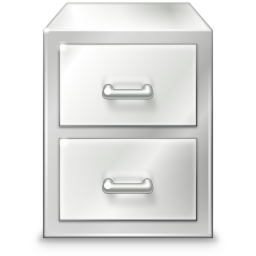
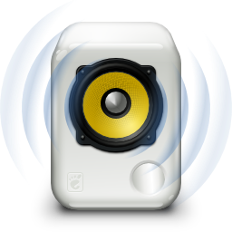
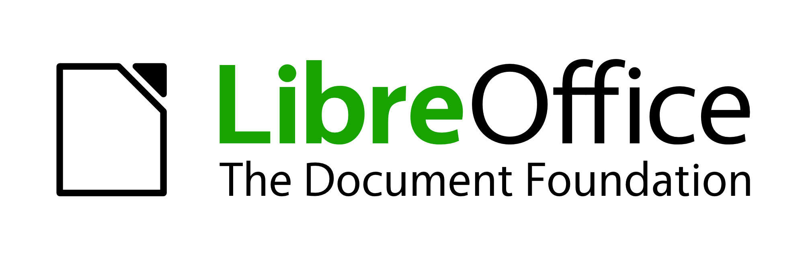

Bekerja dengan efektif dan Nyaman
Produktif dan fokus selama bekerja dengan fitur mulitasking, Mudahkan instalasi berbagai Apps dengan software center, serta Lindungi mata dari radiasi layar dengan fitur Dark Mode
Multitasking
Permudah dan percepat pekerjaan Anda dengan fitur multitasking view

Software Lengkap
Install dan Uninstall Software dengan mudah, cepat dengan berbagai pilihan
Mode Gelap
Mode Gelap yang nyaman, dapat diaktifkan sesuai kebutuhan Anda.
Dukungan Banyak Aplikasi Handal
Ubuntu menawarkan ribuan aplikasi yang tersedia untuk diunduh. Sebagian besar tersedia secara gratis dan dapat diinstal hanya dengan beberapa klik.

Nautilus >

Rhythmbox >

Libre Office >
Alternatif Varian Pilihan Dekstop/Antarmuka Ubuntu
Kurang sreg dengan tampilan default ? Pilih sesuai kebutuhan Anda.
Unduh Ubuntu Desktop
Ubuntu Desktop 20.04 LTS
Unduh Ubuntu versi LTS terbaru, untuk PC desktop dan laptop. LTS adalah singkatan dari dukungan jangka panjang — yang berarti lima tahun, hingga April 2025, pembaruan keamanan dan pemeliharaan gratis, dijamin.
Unduh sekarang